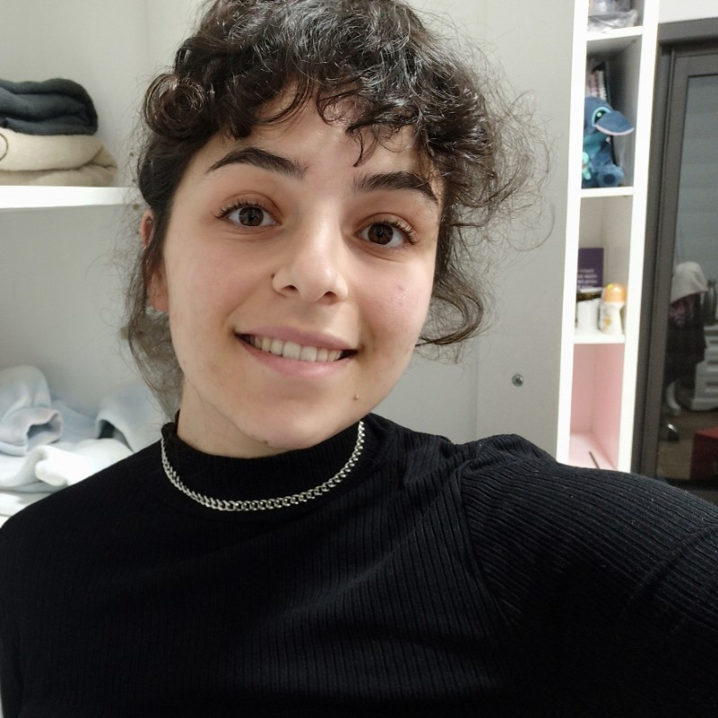

About Me

ברוכיםות הבאיםות לאתר שלי! אני סטודנטית שנה ג' באוניברסיטה העברית המשלבת בין החוג לתקשורת ועיתונאות לבין תכנית מט"ר.
לאחר 4 שני בעיר החלטתי לחלוק איתכםן כמה מהמקומות האוהבים עלי בעיר. מוזמניםות להכנס לרשימה או ליצור איתי קשר!